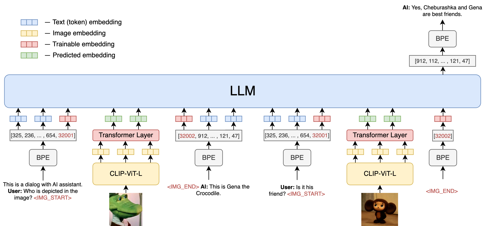

OmniFusion Architecture
OmniFusion Architecture
OmniFusion connects pre-trained CLIP ViT-L/14 visual encoder and large language model, using a Transformer Encoder layer. We consider a two-stage instruction-tuning procedure:
- Stage 1: Pre-training for Feature Alignment. Only the projection matrix is updated, based on a subset of CC3M and COCO.
- Stage 2: Fine-tuning End-to-End. Both the projection matrix and LLM are updated for two different use senarios:
- Visual Chat: OmniFusion is fine-tuned on our generated multimodal instruction-following data for daily user-oriented applications.
- Science QA: OmniFusion is fine-tuned on this multimodal reasonsing dataset for the science domain.

 Performance
Performance
Examples on Visual Instruction Following
Visual Reasoning on two examples from OpenAI GPT-4 Technical Report


Optical character recognition (OCR)


Acknowledgement
This website is adapted from Nerfies, licensed under a Creative Commons Attribution-ShareAlike 4.0 International License.
Usage and License Notices: The data, code and checkpoint is intended and licensed for research use only. They are also restricted to uses that follow the license agreement of CLIP.